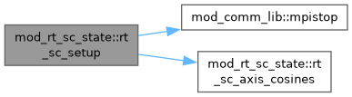

Parameters, resolved state and lifecycle of the short-characteristics (SC) radiative transfer, the Olson-Kunasz linear RT of AMRVAC. More...
Functions/Subroutines | |
| subroutine, public | rt_sc_params_read (files) |
| Read &rt_list from each parameter file. The values stay physical until rt_sc_setup, and a file without the namelist is passed over. | |
| subroutine, public | rt_sc_setup () |
| Check the geometry, convert the parameters to code units, resolve the bands and the boundary conditions, and bind rt_sc_chiB to the chosen opacity. Runs after the unit system is fixed. | |
| subroutine | rt_sc_axis_cosines () |
| Map the quadrature onto the RT grid axes (hdim, updim). Called after rt_sc_init. | |
| pure subroutine | hv (ih, iv, i1, i2) |
| Block indices (i1, i2) of the cell at position ih along hdim and iv along updim. | |
| subroutine, public | rt_sc_reserve_slots () |
| Reserve the wavefront intensity slots in ps_rt, four in all, one per sweep corner, of which the ray-by-ray wave uses only the first. Called from rt_sc_activate, and does nothing unless rt_sc_distributed is set. | |
| subroutine | rt_sc_alloc_state () |
| Allocate ps_rt(igrid)w on every active block and zero it, sharing the geometry of ps, which getbc reads. With bcphys off only w is exchanged. Blocks created by a regrid get their state at the next solve, and blocks that go inactive keep it until they are reused. | |
| subroutine | rt_sc_seam_alloc (dnxv, nray) |
| Allocate the seam buffers once, or again when the row or ray count changes, and zero the buffers written this solve. | |
| subroutine | rt_sc_seam_finalize (dnxv, nray) |
| Sum the seam edges of this solve over the ranks, where each edge has a single owner, and keep them for the next solve. | |
| subroutine | rt_allreduce_chunk (a, n1, n2, comm) |
| In-place sum allreduce of a 2D array in chunks of whole columns of about 1 MB. | |
Variables | |
| logical, public | rt_sc_active = .false. |
| True when the physics module has switched the RT on, with hd_radiative_transfer or mhd_radiative_transfer, through rt_sc_activate. | |
| integer, public | rt_sc_updim = -1 |
| Axis of the stratification, 1 for x and 2 for y. The default of -1 takes the last axis. | |
| integer, public | rt_sc_amr_level = 1 |
| The AMR level the RT runs on. The bands are held at this level so that the RT sees a uniform grid, and it cannot exceed refine_max_level. | |
| double precision, public | rt_sc_blend_t0 = 2.0d4 |
| Centre and half-width in K of the temperature gate in rt_sc_thin_weight, which divides the radiative losses between the SC transfer and the thin cooling. | |
| double precision, public | rt_sc_blend_dt = 5.0d3 |
| integer, parameter | rt_sc_maxband = 8 |
| The RT bands along updim, of which a bar with a photosphere at each end needs two. The edges are in cm, with -1e30 and +1e30 standing for the domain ends, and each end has its own incoming-intensity condition, 'thermal' or 'open'. | |
| integer, public | rt_sc_nband = 1 |
| double precision, dimension(rt_sc_maxband), public | rt_sc_band_min = -1.0d30 |
| double precision, dimension(rt_sc_maxband), public | rt_sc_band_max = 1.0d30 |
| character(len=10), dimension(rt_sc_maxband), public | rt_sc_bc_min = 'thermal' |
| character(len=10), dimension(rt_sc_maxband), public | rt_sc_bc_max = 'open' |
| character(len=10), public | rt_sc_bc_hmin = 'open' |
| Incoming intensity at the horizontal edges where they are not periodic, 'open' for I = 0 or 'thermal' for I = B of the edge column. | |
| character(len=10), public | rt_sc_bc_hmax = 'open' |
| logical, public | rt_sc_flux_blend = .true. |
| rt_sc_flux_blend blends the thin heating c chi (J - B) with the thick -div F. rt_sc_cfl limits the heating so that one stage changes the gas energy by at most that fraction of itself | |
| double precision, public | rt_sc_cfl = 0.5d0 |
| logical, public | rt_sc_debug = .false. |
| Prints the cumulative RT timing every 10 solves. | |
| double precision, public | rt_sc_fi_thresh = -1.0d0 |
| Not read by the RT itself. The user files set it from eoseint_rho_FI_threshold for their own SC source. | |
| integer, public | i_qrad = -1 |
| Extra-variable indices of the heating Q, the vertical flux F and the emergent intensity Iout, left at -1 when they are not registered. | |
| integer, public | i_frad = -1 |
| integer, public | i_iout = -1 |
| double precision, public | rt_sc_ftau1 = 0.0d0 |
| Horizontal mean of the flux on the tau = rt_sc_tau_emergent surface, from rt_sc_emergent_tau1. A flux controller should read this one, because Frad still grows by 10-16% above tau = 1 and the flux at the band top therefore reads high. | |
| double precision, public | rt_sc_tau_emergent = 1.0d0 |
| logical, public | rt_sc_distributed = .true. |
| The distributed KBA wavefront. Each rank sweeps only its own band blocks, one diagonal at a time, with a getbc of the ray intensity between diagonals, so no rank ever holds the whole slab. Its intensity slots are reserved by rt_sc_activate. Setting it false selects the replicated gather, the original implementation, kept for comparison only: it holds the whole band on every rank and its periodic seam is not exact. Production runs should keep KBA. | |
| logical, public | rt_sc_pipeline = .true. |
| The pipelined KBA. The four sweep corners run at once, each with its own intensity slot, and the rays of a corner follow one another through the wavefront. It agrees with the ray-by-ray wave to round-off and is 1.4-1.8 times faster. | |
| logical, public | rt_sc_valpipe = .false. |
| For validation, runs the ray-by-ray and pipelined waves on the same state and prints max|dQ|. | |
| integer | i_isw = -1 |
| First column of the ray intensity in ps_rt, and -1 until reserved. It is the only field getbc exchanges during a sweep, because chi and B are cached per block while J and Fy accumulate in i_qrad and i_frad, perhaps confusingly but it works and prevents size creep in ps_rt. | |
| integer | nisw = 1 |
| Number of intensity slots, one for the ray-by-ray wave and up to four when pipelined. | |
| type(state), dimension(:), allocatable, target | ps_rt |
| The RT intensity state. It is kept out of the hydro w so that it skips the stage copies, the prolongation and the output, and getbc exchanges it with bcphys off. rt_sc_alloc_state allocates it per block. | |
| logical | rt_sc_seam_warned = .false. |
| logical | rt_sc_seam_on = .true. |
| The periodic seam of the single-pass KBA. A ray crossing the seam takes as its inflow the outflow at the far edge from the previous solve, which is exact at steady state. The buffers are indexed by global row along updim and by ray. seamR holds the right-hand outflow of the last block column, which feeds the +x wrap into the first, and seamL the reverse. The _prev buffers are read and the _cur buffers written, the allreduce at the end of each solve makes them global, and both start at zero. With rt_sc_seam_on false the seam inflow stays zero. | |
| double precision, dimension(:,:), allocatable | rt_sc_seaml_prev |
| double precision, dimension(:,:), allocatable | rt_sc_seamr_prev |
| double precision, dimension(:,:), allocatable | rt_sc_seaml_cur |
| double precision, dimension(:,:), allocatable | rt_sc_seamr_cur |
| integer | rt_node_comm = -1 |
| Node-local communicator for the moment reduction of the gather. The ranks reach that reduction far out of step because of the ray imbalance, and inter-node collectives under such a stagger fail on the tcp/ofi provider. Each node therefore forms the full moments from its own copy of the field. | |
| integer | rt_node_rank = 0 |
| integer | rt_node_size = 1 |
| integer | rt_lead_comm = -1 |
| Communicator of one leader rank per node. The field gather sums within each node, then over the leaders, and then broadcasts within the node, so that no collective spans all the ranks. The tcp provider refuses those at 46 Mm. | |
| double precision, public | rt_wt_gath =0.d0 |
| Cumulative wall time of the field gather, the sweep, the moment reduction and the scatter, and of the wave, together with the number of solves. | |
| double precision, public | rt_wt_swp =0.d0 |
| double precision, public | rt_wt_red =0.d0 |
| double precision, public | rt_wt_scat =0.d0 |
| double precision, public | rt_wt_wave =0.d0 |
| integer, public | rt_nsolve =0 |
| double precision, dimension(:,:,:), allocatable | rtw_chib |
| Block chi and B including the ghosts, rebuilt every solve, and the block horizontal flux Fx for the -div F blend. Fy accumulates in i_frad instead, and Fx is copied into ps_rt for its ghost exchange when the band closes. | |
| double precision, dimension(:,:,:), allocatable | rtw_bb |
| double precision, dimension(:,:,:), allocatable | rtw_fx |
| integer | wv_nblk |
| The band blocks of this rank with their block position (bi, bj), the block rows of the current band and its longest diagonal, and the wrap and seam modes of the KBA. | |
| integer | wv_nbxv |
| integer | wv_dmax |
| integer, dimension(:), allocatable | wv_ig |
| integer, dimension(:), allocatable | wv_bi |
| integer, dimension(:), allocatable | wv_bj |
| logical | wv_xwrap |
| logical | wv_seam |
| double precision, dimension(:), allocatable | mu_h |
| Ray cosines along the RT grid axes (hdim, updim). They are (mux, muy) for updim = 2 and the swapped pair for updim = 1. | |
| double precision, dimension(:), allocatable | mu_v |
| integer | updim = 2 |
| integer | hdim = 1 |
| double precision, dimension(rt_sc_maxband) | band_lo_c |
| double precision, dimension(rt_sc_maxband) | band_hi_c |
| logical | rt_sc_ready = .false. |
| integer | rg_nh |
| The RT grid on rt_sc_amr_level along (hdim, updim): cells across the domain, cells per block, blocks across the width, cell sizes and the lower domain edges, with the cell and block rows of each band. | |
| integer | rg_nv |
| integer | rg_bh |
| integer | rg_bv |
| integer | rg_nbh |
| double precision | rg_dh |
| double precision | rg_dv |
| double precision | rg_hlo |
| double precision | rg_vlo |
| integer, dimension(rt_sc_maxband) | band_nv |
| integer, dimension(rt_sc_maxband) | band_nbv |
| integer, dimension(2) | eh |
| Unit steps of hdim and updim in block index space and the block index ranges along them, so that a loop written in (h, v) serves either stratification axis. | |
| integer, dimension(2) | ev |
| integer | imlo_h |
| integer | imhi_h |
| integer | imlo_v |
| integer | imhi_v |
| integer | iglo_h |
| integer | ighi_h |
| integer | iglo_v |
| integer | ighi_v |
Detailed Description
Parameters, resolved state and lifecycle of the short-characteristics (SC) radiative transfer, the Olson-Kunasz linear RT of AMRVAC.
The &rt_list parameters are physical, with heights in cm, pressures in dyn/cm^2 and temperatures in K. rt_sc_params_read reads them, and rt_sc_setup, run once the units are fixed, converts them to code units, snaps the top of each band to a block face, sets the horizontal boundary conditions, binds the opacity callback and builds the quadrature. rt_sc_activate, called by the physics module when hd_radiative_transfer or mhd_radiative_transfer is set, runs the reading and reserves the intensity slots that the distributed wavefront needs
The module also holds the state that the solvers share. This is the ps_rt intensity state, kept out of the hydro w so that it skips the stage copies, the prolongation and the output, together with the block caches of chi and B, the KBA wave state of the current solve, the buffers of the periodic seam and the node communicators of the gather. It uses mod_rt_sc_opacity and mod_rt_sc_kernel, and mod_rt_sc_solvers uses it in turn
Jack Jenkins (10.2026); More or less finished in v1 state for amrvac4.0
Function/Subroutine Documentation
◆ hv()
| pure subroutine mod_rt_sc_state::hv | ( | integer, intent(in) | ih, |
| integer, intent(in) | iv, | ||
| integer, intent(out) | i1, | ||
| integer, intent(out) | i2 ) |
Block indices (i1, i2) of the cell at position ih along hdim and iv along updim.
Definition at line 287 of file mod_rt_sc_state.t.
◆ rt_allreduce_chunk()
| subroutine mod_rt_sc_state::rt_allreduce_chunk | ( | double precision, dimension(n1,n2), intent(inout) | a, |
| integer, intent(in) | n1, | ||
| integer, intent(in) | n2, | ||
| integer, intent(in) | comm ) |
In-place sum allreduce of a 2D array in chunks of whole columns of about 1 MB.
Definition at line 362 of file mod_rt_sc_state.t.
◆ rt_sc_alloc_state()
| subroutine mod_rt_sc_state::rt_sc_alloc_state |
Allocate ps_rt(igrid)w on every active block and zero it, sharing the geometry of ps, which getbc reads. With bcphys off only w is exchanged. Blocks created by a regrid get their state at the next solve, and blocks that go inactive keep it until they are reused.
Definition at line 309 of file mod_rt_sc_state.t.
◆ rt_sc_axis_cosines()
| subroutine mod_rt_sc_state::rt_sc_axis_cosines |
Map the quadrature onto the RT grid axes (hdim, updim). Called after rt_sc_init.
Definition at line 276 of file mod_rt_sc_state.t.
◆ rt_sc_params_read()
| subroutine, public mod_rt_sc_state::rt_sc_params_read | ( | character(len=*), dimension(:), intent(in) | files | ) |
Read &rt_list from each parameter file. The values stay physical until rt_sc_setup, and a file without the namelist is passed over.
Definition at line 164 of file mod_rt_sc_state.t.
◆ rt_sc_reserve_slots()
| subroutine, public mod_rt_sc_state::rt_sc_reserve_slots |
Reserve the wavefront intensity slots in ps_rt, four in all, one per sweep corner, of which the ray-by-ray wave uses only the first. Called from rt_sc_activate, and does nothing unless rt_sc_distributed is set.
Definition at line 297 of file mod_rt_sc_state.t.
◆ rt_sc_seam_alloc()
| subroutine mod_rt_sc_state::rt_sc_seam_alloc | ( | integer, intent(in) | dnxv, |
| integer, intent(in) | nray ) |
Allocate the seam buffers once, or again when the row or ray count changes, and zero the buffers written this solve.
Definition at line 334 of file mod_rt_sc_state.t.
◆ rt_sc_seam_finalize()
| subroutine mod_rt_sc_state::rt_sc_seam_finalize | ( | integer, intent(in) | dnxv, |
| integer, intent(in) | nray ) |
Sum the seam edges of this solve over the ranks, where each edge has a single owner, and keep them for the next solve.
Definition at line 351 of file mod_rt_sc_state.t.
◆ rt_sc_setup()
| subroutine, public mod_rt_sc_state::rt_sc_setup |
Check the geometry, convert the parameters to code units, resolve the bands and the boundary conditions, and bind rt_sc_chiB to the chosen opacity. Runs after the unit system is fixed.
Definition at line 177 of file mod_rt_sc_state.t.

Variable Documentation
◆ band_hi_c
| double precision, dimension(rt_sc_maxband) mod_rt_sc_state::band_hi_c |
Definition at line 134 of file mod_rt_sc_state.t.
◆ band_lo_c
| double precision, dimension(rt_sc_maxband) mod_rt_sc_state::band_lo_c |
Definition at line 134 of file mod_rt_sc_state.t.
◆ band_nbv
| integer, dimension(rt_sc_maxband) mod_rt_sc_state::band_nbv |
Definition at line 141 of file mod_rt_sc_state.t.
◆ band_nv
| integer, dimension(rt_sc_maxband) mod_rt_sc_state::band_nv |
Definition at line 141 of file mod_rt_sc_state.t.
◆ eh
| integer, dimension(2) mod_rt_sc_state::eh |
Unit steps of hdim and updim in block index space and the block index ranges along them, so that a loop written in (h, v) serves either stratification axis.
Definition at line 144 of file mod_rt_sc_state.t.
◆ ev
| integer, dimension(2) mod_rt_sc_state::ev |
Definition at line 144 of file mod_rt_sc_state.t.
◆ hdim
| integer mod_rt_sc_state::hdim = 1 |
Definition at line 133 of file mod_rt_sc_state.t.
◆ i_frad
| integer, public mod_rt_sc_state::i_frad = -1 |
Definition at line 64 of file mod_rt_sc_state.t.
◆ i_iout
| integer, public mod_rt_sc_state::i_iout = -1 |
Definition at line 64 of file mod_rt_sc_state.t.
◆ i_isw
| integer mod_rt_sc_state::i_isw = -1 |
First column of the ray intensity in ps_rt, and -1 until reserved. It is the only field getbc exchanges during a sweep, because chi and B are cached per block while J and Fy accumulate in i_qrad and i_frad, perhaps confusingly but it works and prevents size creep in ps_rt.
Definition at line 85 of file mod_rt_sc_state.t.
◆ i_qrad
| integer, public mod_rt_sc_state::i_qrad = -1 |
Extra-variable indices of the heating Q, the vertical flux F and the emergent intensity Iout, left at -1 when they are not registered.
Definition at line 64 of file mod_rt_sc_state.t.
◆ ighi_h
| integer mod_rt_sc_state::ighi_h |
Definition at line 145 of file mod_rt_sc_state.t.
◆ ighi_v
| integer mod_rt_sc_state::ighi_v |
Definition at line 145 of file mod_rt_sc_state.t.
◆ iglo_h
| integer mod_rt_sc_state::iglo_h |
Definition at line 145 of file mod_rt_sc_state.t.
◆ iglo_v
| integer mod_rt_sc_state::iglo_v |
Definition at line 145 of file mod_rt_sc_state.t.
◆ imhi_h
| integer mod_rt_sc_state::imhi_h |
Definition at line 145 of file mod_rt_sc_state.t.
◆ imhi_v
| integer mod_rt_sc_state::imhi_v |
Definition at line 145 of file mod_rt_sc_state.t.
◆ imlo_h
| integer mod_rt_sc_state::imlo_h |
Definition at line 145 of file mod_rt_sc_state.t.
◆ imlo_v
| integer mod_rt_sc_state::imlo_v |
Definition at line 145 of file mod_rt_sc_state.t.
◆ mu_h
| double precision, dimension(:), allocatable mod_rt_sc_state::mu_h |
Ray cosines along the RT grid axes (hdim, updim). They are (mux, muy) for updim = 2 and the swapped pair for updim = 1.
Definition at line 130 of file mod_rt_sc_state.t.
◆ mu_v
| double precision, dimension(:), allocatable mod_rt_sc_state::mu_v |
Definition at line 130 of file mod_rt_sc_state.t.
◆ nisw
| integer mod_rt_sc_state::nisw = 1 |
Number of intensity slots, one for the ray-by-ray wave and up to four when pipelined.
Definition at line 87 of file mod_rt_sc_state.t.
◆ ps_rt
| type(state), dimension(:), allocatable, target mod_rt_sc_state::ps_rt |
The RT intensity state. It is kept out of the hydro w so that it skips the stage copies, the prolongation and the output, and getbc exchanges it with bcphys off. rt_sc_alloc_state allocates it per block.
Definition at line 91 of file mod_rt_sc_state.t.
◆ rg_bh
| integer mod_rt_sc_state::rg_bh |
Definition at line 139 of file mod_rt_sc_state.t.
◆ rg_bv
| integer mod_rt_sc_state::rg_bv |
Definition at line 139 of file mod_rt_sc_state.t.
◆ rg_dh
| double precision mod_rt_sc_state::rg_dh |
Definition at line 140 of file mod_rt_sc_state.t.
◆ rg_dv
| double precision mod_rt_sc_state::rg_dv |
Definition at line 140 of file mod_rt_sc_state.t.
◆ rg_hlo
| double precision mod_rt_sc_state::rg_hlo |
Definition at line 140 of file mod_rt_sc_state.t.
◆ rg_nbh
| integer mod_rt_sc_state::rg_nbh |
Definition at line 139 of file mod_rt_sc_state.t.
◆ rg_nh
| integer mod_rt_sc_state::rg_nh |
The RT grid on rt_sc_amr_level along (hdim, updim): cells across the domain, cells per block, blocks across the width, cell sizes and the lower domain edges, with the cell and block rows of each band.
Definition at line 139 of file mod_rt_sc_state.t.
◆ rg_nv
| integer mod_rt_sc_state::rg_nv |
Definition at line 139 of file mod_rt_sc_state.t.
◆ rg_vlo
| double precision mod_rt_sc_state::rg_vlo |
Definition at line 140 of file mod_rt_sc_state.t.
◆ rt_lead_comm
| integer mod_rt_sc_state::rt_lead_comm = -1 |
Communicator of one leader rank per node. The field gather sums within each node, then over the leaders, and then broadcasts within the node, so that no collective spans all the ranks. The tcp provider refuses those at 46 Mm.
Definition at line 111 of file mod_rt_sc_state.t.
◆ rt_node_comm
| integer mod_rt_sc_state::rt_node_comm = -1 |
Node-local communicator for the moment reduction of the gather. The ranks reach that reduction far out of step because of the ray imbalance, and inter-node collectives under such a stagger fail on the tcp/ofi provider. Each node therefore forms the full moments from its own copy of the field.
Definition at line 107 of file mod_rt_sc_state.t.
◆ rt_node_rank
| integer mod_rt_sc_state::rt_node_rank = 0 |
Definition at line 107 of file mod_rt_sc_state.t.
◆ rt_node_size
| integer mod_rt_sc_state::rt_node_size = 1 |
Definition at line 107 of file mod_rt_sc_state.t.
◆ rt_nsolve
| integer, public mod_rt_sc_state::rt_nsolve =0 |
Definition at line 116 of file mod_rt_sc_state.t.
◆ rt_sc_active
| logical, public mod_rt_sc_state::rt_sc_active = .false. |
True when the physics module has switched the RT on, with hd_radiative_transfer or mhd_radiative_transfer, through rt_sc_activate.
Definition at line 30 of file mod_rt_sc_state.t.
◆ rt_sc_amr_level
| integer, public mod_rt_sc_state::rt_sc_amr_level = 1 |
The AMR level the RT runs on. The bands are held at this level so that the RT sees a uniform grid, and it cannot exceed refine_max_level.
Definition at line 35 of file mod_rt_sc_state.t.
◆ rt_sc_band_max
| double precision, dimension(rt_sc_maxband), public mod_rt_sc_state::rt_sc_band_max = 1.0d30 |
Definition at line 47 of file mod_rt_sc_state.t.
◆ rt_sc_band_min
| double precision, dimension(rt_sc_maxband), public mod_rt_sc_state::rt_sc_band_min = -1.0d30 |
Definition at line 46 of file mod_rt_sc_state.t.
◆ rt_sc_bc_hmax
| character(len=10), public mod_rt_sc_state::rt_sc_bc_hmax = 'open' |
Definition at line 52 of file mod_rt_sc_state.t.
◆ rt_sc_bc_hmin
| character(len=10), public mod_rt_sc_state::rt_sc_bc_hmin = 'open' |
Incoming intensity at the horizontal edges where they are not periodic, 'open' for I = 0 or 'thermal' for I = B of the edge column.
Definition at line 52 of file mod_rt_sc_state.t.
◆ rt_sc_bc_max
| character(len=10), dimension(rt_sc_maxband), public mod_rt_sc_state::rt_sc_bc_max = 'open' |
Definition at line 49 of file mod_rt_sc_state.t.
◆ rt_sc_bc_min
| character(len=10), dimension(rt_sc_maxband), public mod_rt_sc_state::rt_sc_bc_min = 'thermal' |
Definition at line 48 of file mod_rt_sc_state.t.
◆ rt_sc_blend_dt
| double precision, public mod_rt_sc_state::rt_sc_blend_dt = 5.0d3 |
Definition at line 39 of file mod_rt_sc_state.t.
◆ rt_sc_blend_t0
| double precision, public mod_rt_sc_state::rt_sc_blend_t0 = 2.0d4 |
Centre and half-width in K of the temperature gate in rt_sc_thin_weight, which divides the radiative losses between the SC transfer and the thin cooling.
Definition at line 38 of file mod_rt_sc_state.t.
◆ rt_sc_cfl
| double precision, public mod_rt_sc_state::rt_sc_cfl = 0.5d0 |
Definition at line 56 of file mod_rt_sc_state.t.
◆ rt_sc_debug
| logical, public mod_rt_sc_state::rt_sc_debug = .false. |
Prints the cumulative RT timing every 10 solves.
Definition at line 58 of file mod_rt_sc_state.t.
◆ rt_sc_distributed
| logical, public mod_rt_sc_state::rt_sc_distributed = .true. |
The distributed KBA wavefront. Each rank sweeps only its own band blocks, one diagonal at a time, with a getbc of the ray intensity between diagonals, so no rank ever holds the whole slab. Its intensity slots are reserved by rt_sc_activate. Setting it false selects the replicated gather, the original implementation, kept for comparison only: it holds the whole band on every rank and its periodic seam is not exact. Production runs should keep KBA.
Definition at line 75 of file mod_rt_sc_state.t.
◆ rt_sc_fi_thresh
| double precision, public mod_rt_sc_state::rt_sc_fi_thresh = -1.0d0 |
Not read by the RT itself. The user files set it from eoseint_rho_FI_threshold for their own SC source.
Definition at line 61 of file mod_rt_sc_state.t.
◆ rt_sc_flux_blend
| logical, public mod_rt_sc_state::rt_sc_flux_blend = .true. |
rt_sc_flux_blend blends the thin heating c chi (J - B) with the thick -div F. rt_sc_cfl limits the heating so that one stage changes the gas energy by at most that fraction of itself
Definition at line 55 of file mod_rt_sc_state.t.
◆ rt_sc_ftau1
| double precision, public mod_rt_sc_state::rt_sc_ftau1 = 0.0d0 |
Horizontal mean of the flux on the tau = rt_sc_tau_emergent surface, from rt_sc_emergent_tau1. A flux controller should read this one, because Frad still grows by 10-16% above tau = 1 and the flux at the band top therefore reads high.
Definition at line 68 of file mod_rt_sc_state.t.
◆ rt_sc_maxband
| integer, parameter mod_rt_sc_state::rt_sc_maxband = 8 |
The RT bands along updim, of which a bar with a photosphere at each end needs two. The edges are in cm, with -1e30 and +1e30 standing for the domain ends, and each end has its own incoming-intensity condition, 'thermal' or 'open'.
Definition at line 44 of file mod_rt_sc_state.t.
◆ rt_sc_nband
| integer, public mod_rt_sc_state::rt_sc_nband = 1 |
Definition at line 45 of file mod_rt_sc_state.t.
◆ rt_sc_pipeline
| logical, public mod_rt_sc_state::rt_sc_pipeline = .true. |
The pipelined KBA. The four sweep corners run at once, each with its own intensity slot, and the rays of a corner follow one another through the wavefront. It agrees with the ray-by-ray wave to round-off and is 1.4-1.8 times faster.
Definition at line 79 of file mod_rt_sc_state.t.
◆ rt_sc_ready
| logical mod_rt_sc_state::rt_sc_ready = .false. |
Definition at line 135 of file mod_rt_sc_state.t.
◆ rt_sc_seam_on
| logical mod_rt_sc_state::rt_sc_seam_on = .true. |
The periodic seam of the single-pass KBA. A ray crossing the seam takes as its inflow the outflow at the far edge from the previous solve, which is exact at steady state. The buffers are indexed by global row along updim and by ray. seamR holds the right-hand outflow of the last block column, which feeds the +x wrap into the first, and seamL the reverse. The _prev buffers are read and the _cur buffers written, the allreduce at the end of each solve makes them global, and both start at zero. With rt_sc_seam_on false the seam inflow stays zero.
Definition at line 100 of file mod_rt_sc_state.t.
◆ rt_sc_seam_warned
| logical mod_rt_sc_state::rt_sc_seam_warned = .false. |
Definition at line 93 of file mod_rt_sc_state.t.
◆ rt_sc_seaml_cur
| double precision, dimension(:,:), allocatable mod_rt_sc_state::rt_sc_seaml_cur |
Definition at line 102 of file mod_rt_sc_state.t.
◆ rt_sc_seaml_prev
| double precision, dimension(:,:), allocatable mod_rt_sc_state::rt_sc_seaml_prev |
Definition at line 101 of file mod_rt_sc_state.t.
◆ rt_sc_seamr_cur
| double precision, dimension(:,:), allocatable mod_rt_sc_state::rt_sc_seamr_cur |
Definition at line 102 of file mod_rt_sc_state.t.
◆ rt_sc_seamr_prev
| double precision, dimension(:,:), allocatable mod_rt_sc_state::rt_sc_seamr_prev |
Definition at line 101 of file mod_rt_sc_state.t.
◆ rt_sc_tau_emergent
| double precision, public mod_rt_sc_state::rt_sc_tau_emergent = 1.0d0 |
Definition at line 69 of file mod_rt_sc_state.t.
◆ rt_sc_updim
| integer, public mod_rt_sc_state::rt_sc_updim = -1 |
Axis of the stratification, 1 for x and 2 for y. The default of -1 takes the last axis.
Definition at line 32 of file mod_rt_sc_state.t.
◆ rt_sc_valpipe
| logical, public mod_rt_sc_state::rt_sc_valpipe = .false. |
For validation, runs the ray-by-ray and pipelined waves on the same state and prints max|dQ|.
Definition at line 81 of file mod_rt_sc_state.t.
◆ rt_wt_gath
| double precision, public mod_rt_sc_state::rt_wt_gath =0.d0 |
Cumulative wall time of the field gather, the sweep, the moment reduction and the scatter, and of the wave, together with the number of solves.
Definition at line 114 of file mod_rt_sc_state.t.
◆ rt_wt_red
| double precision, public mod_rt_sc_state::rt_wt_red =0.d0 |
Definition at line 114 of file mod_rt_sc_state.t.
◆ rt_wt_scat
| double precision, public mod_rt_sc_state::rt_wt_scat =0.d0 |
Definition at line 114 of file mod_rt_sc_state.t.
◆ rt_wt_swp
| double precision, public mod_rt_sc_state::rt_wt_swp =0.d0 |
Definition at line 114 of file mod_rt_sc_state.t.
◆ rt_wt_wave
| double precision, public mod_rt_sc_state::rt_wt_wave =0.d0 |
Definition at line 115 of file mod_rt_sc_state.t.
◆ rtw_bb
| double precision, dimension(:,:,:), allocatable mod_rt_sc_state::rtw_bb |
Definition at line 120 of file mod_rt_sc_state.t.
◆ rtw_chib
| double precision, dimension(:,:,:), allocatable mod_rt_sc_state::rtw_chib |
Block chi and B including the ghosts, rebuilt every solve, and the block horizontal flux Fx for the -div F blend. Fy accumulates in i_frad instead, and Fx is copied into ps_rt for its ghost exchange when the band closes.
Definition at line 120 of file mod_rt_sc_state.t.
◆ rtw_fx
| double precision, dimension(:,:,:), allocatable mod_rt_sc_state::rtw_fx |
Definition at line 120 of file mod_rt_sc_state.t.
◆ updim
| integer mod_rt_sc_state::updim = 2 |
Definition at line 133 of file mod_rt_sc_state.t.
◆ wv_bi
| integer, dimension(:), allocatable mod_rt_sc_state::wv_bi |
Definition at line 124 of file mod_rt_sc_state.t.
◆ wv_bj
| integer, dimension(:), allocatable mod_rt_sc_state::wv_bj |
Definition at line 124 of file mod_rt_sc_state.t.
◆ wv_dmax
| integer mod_rt_sc_state::wv_dmax |
Definition at line 123 of file mod_rt_sc_state.t.
◆ wv_ig
| integer, dimension(:), allocatable mod_rt_sc_state::wv_ig |
Definition at line 124 of file mod_rt_sc_state.t.
◆ wv_nblk
| integer mod_rt_sc_state::wv_nblk |
The band blocks of this rank with their block position (bi, bj), the block rows of the current band and its longest diagonal, and the wrap and seam modes of the KBA.
Definition at line 123 of file mod_rt_sc_state.t.
◆ wv_nbxv
| integer mod_rt_sc_state::wv_nbxv |
Definition at line 123 of file mod_rt_sc_state.t.
◆ wv_seam
| logical mod_rt_sc_state::wv_seam |
Definition at line 127 of file mod_rt_sc_state.t.
◆ wv_xwrap
| logical mod_rt_sc_state::wv_xwrap |
Definition at line 125 of file mod_rt_sc_state.t.
Generated by